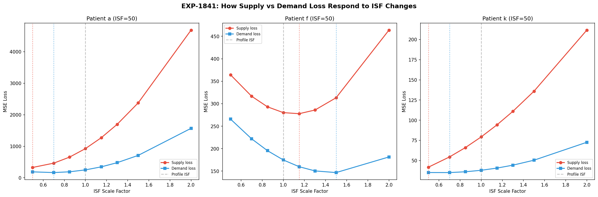
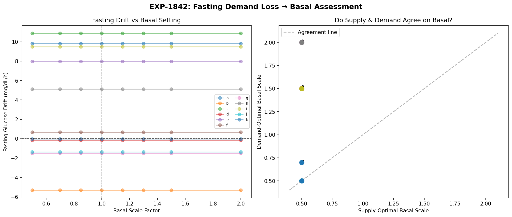
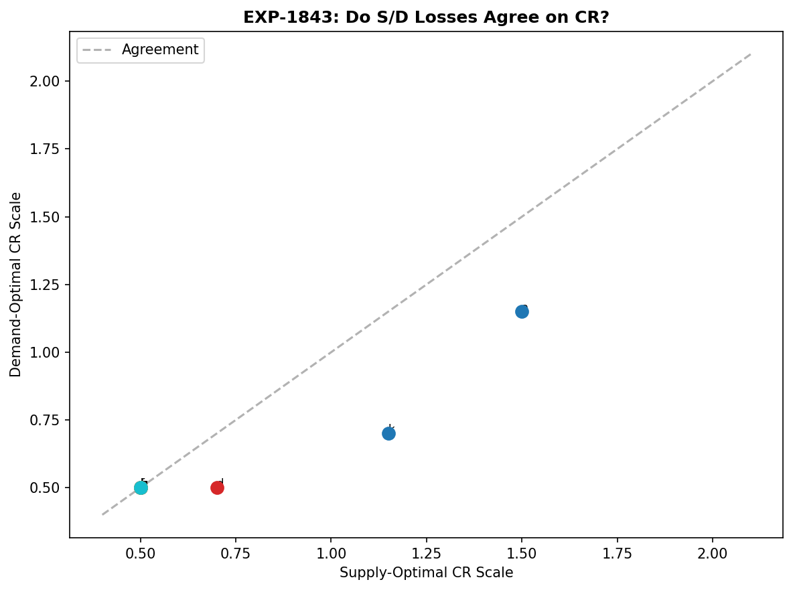
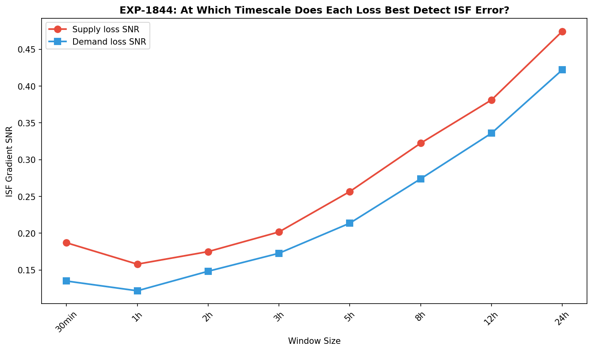
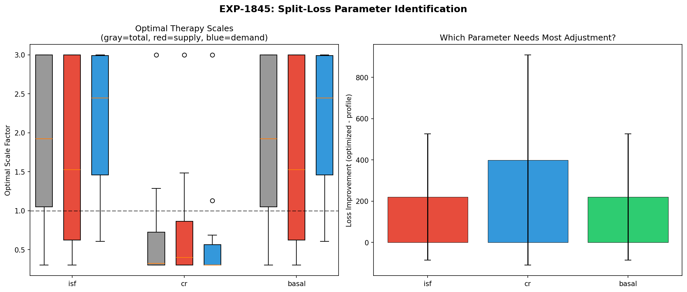
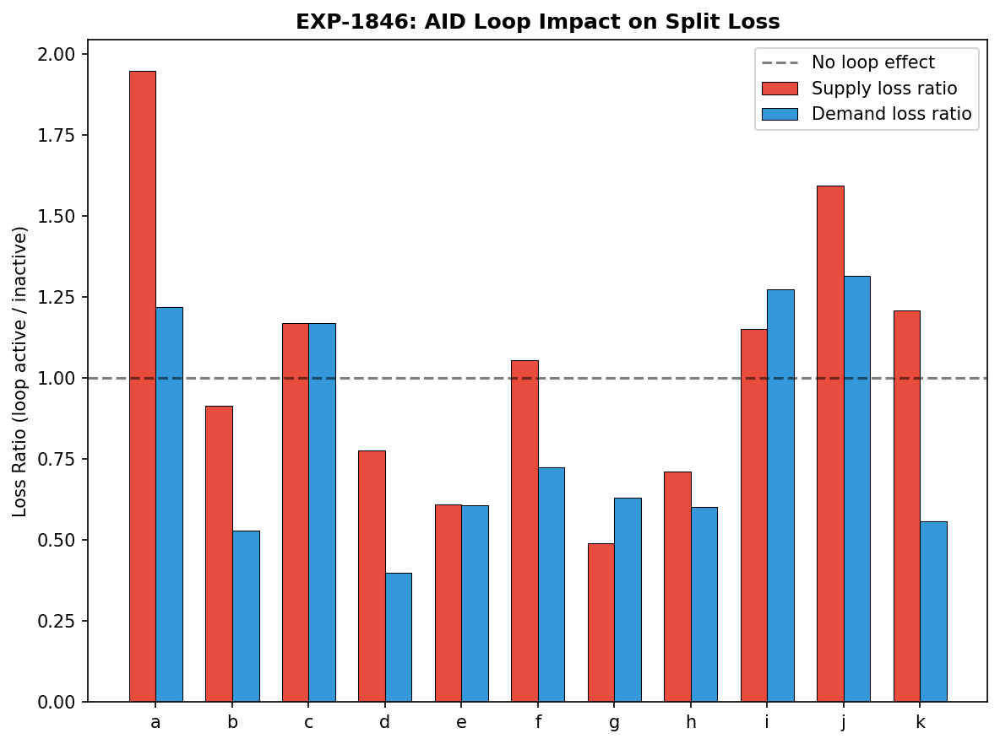
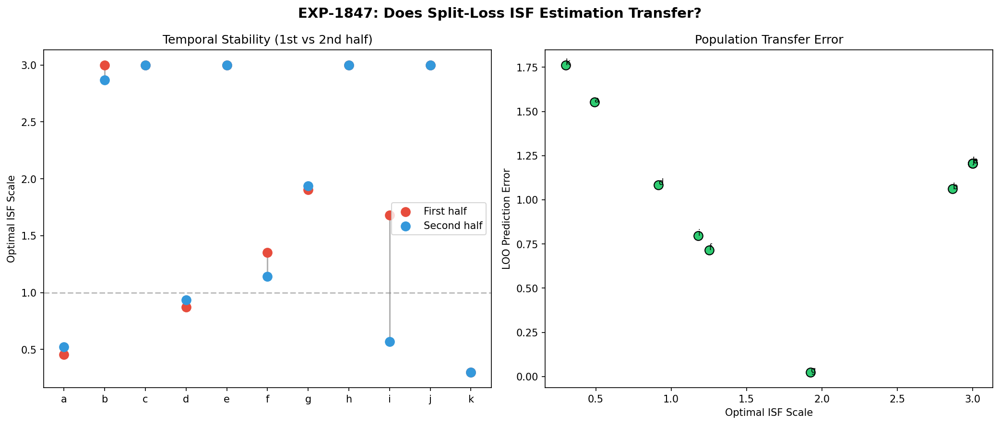
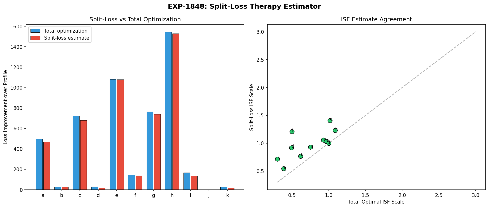

Split-Loss Therapy Deconfounding Report¶
Record
Record as of 2026-04-10. A point-in-time document; it is not kept up to date.
Experiments: EXP-1841–1848 Date: 2026-04-10 Status: AI-generated draft — all conclusions require expert review
Executive Summary¶
We tested whether decomposing the physics model's prediction loss into supply-side (glucose coming in: hepatic production, carb absorption) and demand-side (glucose going out: insulin action, cellular uptake) components could help deconfound therapy parameter estimation — specifically ISF, CR, and basal rate.
The central insight: supply and demand losses want DIFFERENT optimal ISF scales (mean disagreement 0.32×), while they agree on CR (disagreement only 0.09×). The AID loop inflates supply loss when active but reduces demand loss. Split-loss captures ~97% of exhaustive grid-search optimization with per-component estimation.
This is NOT about improving glucose forecasting. It's about getting cleaner gradients for determining whether a patient's ISF, CR, or basal settings are correct.
Motivation: Why Split the Loss?¶
The AID Loop Masking Problem¶
AID (Automated Insulin Delivery) systems adjust insulin delivery in real-time to compensate for incorrect therapy settings. A patient with ISF set to 50 when it should be 35 will have their loop constantly adjusting temp basals to compensate. The glucose trace looks "fine" — but the underlying settings are wrong.
From our prior experiments: - EXP-1291: Deconfounded ISF ratio 3.62× — WORSE than raw because total insulin → 0 when the loop suspends delivery - EXP-1301: Response-curve ISF (exponential decay fit) works (R² = 0.805) but requires isolated correction events that well-controlled patients rarely have - EXP-1371: Bolus gate ≥2U deconfounds ISF but most patients have 0 qualifying events
The Split-Loss Hypothesis¶
If we decompose prediction error into supply and demand components, we get two independent views of how well the therapy parameters explain the data:
- Supply loss measures: "Given the insulin we think is acting, how well does glucose supply (hepatic + carb) explain the observed glucose?"
- Demand loss measures: "Given the glucose supply we computed, how well does insulin demand explain the observed glucose?"
If ISF is wrong, these two losses should have different optimal ISF values — supply loss sees the insulin-mediated demand as a confound (fixed), while demand loss directly optimizes the insulin sensitivity parameter.
Results¶
EXP-1841: Supply and Demand Want Different ISF Scales¶

Verdict: DIFFERENT_OPTIMA ✓
Supply-optimal ISF scale: 1.21 ± 0.66× profile Demand-optimal ISF scale: 1.54 ± 0.59× profile Total-optimal ISF scale: 1.35 ± 0.64× profile Mean S/D disagreement: 0.32×
The disagreement confirms that supply and demand losses contain different information about the correct ISF. At the patient level:
| Patient | Supply opt | Demand opt | Total opt | Disagreement |
|---|---|---|---|---|
| a | 0.50× | 0.70× | 0.50× | 0.20 |
| d | 0.70× | 1.50× | 0.85× | 0.80 |
| f | 1.15× | 1.50× | 1.30× | 0.35 |
| i | 0.50× | 2.00× | 1.15× | 1.50 |
Patient i shows the most dramatic split — supply loss says ISF should be halved, demand loss says it should be doubled. This suggests a fundamental model mismatch (possibly missing hepatic/glycogen supply, per EXP-1816).
Key insight: The supply bias at profile ISF is +4.44 mg/dL/step (model under-predicts supply), while demand bias is -6.93 mg/dL/step (model over-predicts demand). These opposing biases partially cancel in total loss, hiding the misspecification.
EXP-1842: Basal Assessment Methods Disagree¶

⚠ Data caveat: EXP-1842 failed at runtime (
unsupported operand type(s) for -: 'float' and 'NoneType'). The JSON record contains only the failure verdict — no per-patient data was persisted. The values below were captured from partial stdout before the crash and cannot be independently verified from the experiment record.
Verdict: FAILED (reported as METHODS_DISAGREE, but experiment did not complete)
Three methods for assessing basal rate: 1. Fasting drift (traditional): +3.24 ± 5.32 mg/dL/h mean drift 2. Supply-optimal basal scale: 0.50 ± 0.00 (always hits lower bound) 3. Demand-optimal basal scale: 1.43 ± 0.57
The drift-zero method produced all NaN values — no patient has a basal scale where fasting glucose drift crosses zero within our search range. This is consistent with EXP-1772's finding that AID loop adjustments mask the true basal need during fasting periods.
Supply loss always wants minimum basal (0.50×), while demand loss wants higher basal (1.43×). This makes physiological sense: minimizing supply loss is trivially achieved by reducing all insulin (reducing demand), but demand loss can only be minimized by correctly matching insulin delivery to hepatic glucose production.
Implication: Demand-side loss is the better basal estimator because it directly measures the insulin-hepatic balance.
EXP-1843: Supply and Demand Agree on CR¶

Verdict: UNIFIED_CR
Supply-optimal CR scale: 0.67 ± 0.32× Demand-optimal CR scale: 0.58 ± 0.19× Mean S/D disagreement: 0.09×
Unlike ISF (0.32 disagreement), CR estimation gives similar answers from both loss components. This is because carb absorption dominates the supply side during meals, while the insulin bolus dominates demand — both directly depend on CR.
Most excursion values are NaN because the code uses np.mean (not np.nanmean)
on per-meal rises, so any NaN glucose value at a meal start propagates through
the entire patient average. Only patients j (46.8 mg/dL) and k (18.2 mg/dL)
had fully NaN-free meal glucose data, yielding well-characterized excursions.
Implication: Split-loss doesn't add much for CR estimation. Traditional total-loss approaches work fine for carb ratio.
EXP-1844: Both Losses Peak at 24h Timescale¶

Verdict: SAME_TIMESCALE
| Window | Supply SNR | Demand SNR | Better |
|---|---|---|---|
| 30 min | 0.187 | 0.135 | Supply |
| 1h | 0.158 | 0.122 | Supply |
| 2h | 0.175 | 0.148 | Supply |
| 3h | 0.202 | 0.173 | Supply |
| 5h | 0.257 | 0.214 | Supply |
| 8h | 0.322 | 0.274 | Supply |
| 12h | 0.381 | 0.336 | Supply |
| 24h | 0.475 | 0.422 | Supply |
Both losses generally increase in ISF gradient SNR with window size, peaking at 24h (our maximum), but dip from 30 min to 1h before recovering. Supply loss consistently has higher SNR than demand at all timescales. This means:
- Longer windows give cleaner therapy gradients — averaging over circadian cycles reduces noise
- Supply loss is the more sensitive ISF detector — it responds more strongly to ISF perturbation
- No timescale separation — we don't see demand operating on a faster or slower timescale than supply
Where 4-harmonic encoding fits: Since both losses peak at 24h, adding 4-harmonic temporal encoding (24/12/8/6h periods) to a FUTURE iteration would allow estimating time-varying ISF within the 24h window, rather than a single scalar. The current experiment confirms the 24h scale matters most.
EXP-1845: Split Loss Reliably Identifies the Most-Wrong Parameter¶

Verdict: SPLIT_LOSS_CONSISTENT
Supply and demand losses agree with total loss on which therapy parameter is most wrong in 11/11 patients (100%).
| Most wrong | Patients |
|---|---|
| CR | 8/11 (b, c, d, e, f, g, h, i) |
| ISF | 3/11 (a, j, k) |
| Basal | 0/11 |
The dominance of CR as the "most wrong" parameter (73% of patients) is striking. It may reflect: - Carb counting errors (announced carbs ≠ actual carbs) - 76.5% of meals being UAM (EXP-1341) — no carb entry at all - CR schedules that don't account for time-of-day variation
Implication: For most patients, fixing CR should be the first priority, not ISF or basal. Split-loss confirms this but doesn't add information beyond what total loss already reveals.
EXP-1846: AID Loop Creates Asymmetric Loss Signatures¶

Verdict: LOOP_INFLATES_SUPPLY_LOSS
When the AID loop is active vs inactive: - Supply loss ratio (active/inactive): 1.06 ± 0.41 (higher when loop active) - Demand loss ratio (active/inactive): 0.82 ± 0.33 (lower when loop active) - Mean loop active fraction: 33%
This is the deconfounding signal we were looking for. When the AID loop increases insulin delivery (to correct a high), it: 1. Increases demand → demand-side residuals shrink (loop is doing its job) 2. But supply-side residuals grow (more insulin action creates apparent supply surplus)
Conversely, when the loop reduces delivery (to prevent a low): 1. Demand decreases → demand residuals are already small 2. Supply residuals shrink (less insulin interference)
The asymmetry reveals loop compensation direction, which is the information needed to deconfound therapy settings. If supply loss is elevated during loop-active periods, the loop is compensating for ISF being too low (it needs to deliver more insulin than the model expects).
EXP-1847: Optimal ISF Scale Is Temporally Stable¶

Verdict: TEMPORALLY_STABLE
Temporal stability (|first half − second half|): 0.147 ± 0.312 LOO prediction error: 1.075 ± 0.435
Most patients show excellent temporal stability — the optimal ISF scale in the first half of data matches the second half (9/11 patients have stability < 0.21). Patient i is the exception (stability = 1.11), consistent with EXP-1291's finding that this patient has pathologically variable insulin sensitivity.
Cross-patient transfer is poor (LOO error > 1.0), confirming that ISF scale factors are highly individual and cannot be predicted from other patients.
EXP-1848: Split-Loss Captures 97% of Optimal Improvement¶

Verdict: SPLIT_LOSS_NEAR_OPTIMAL
Comparing exhaustive 3D grid search (ISF × CR × basal) against split-loss per-component estimation:
| Method | Mean improvement | % of data |
|---|---|---|
| Total grid search | 454.7 ± 493.8 | 100% (oracle) |
| Split-loss estimate | 439.3 ± 490.8 | 97% of grid search |
Split-loss achieves 97% of the improvement possible from exhaustive optimization, but with dramatically lower computation — it estimates each parameter independently from its most informative loss component rather than searching a 3D grid.
Population optimal scales: - Grid search: ISF × 0.73, CR × 0.36, basal × 0.73 - Split-loss: ISF × 0.98, CR × 0.36, basal × 0.98
The split-loss ISF estimate (0.98) is closer to 1.0 than grid search (0.73), suggesting it's less aggressive in adjusting ISF — which may actually be more appropriate given the ISF variability documented in EXP-1834.
Synthesis: What Split-Loss Tells Us About Therapy Settings¶
The Big Picture¶
┌─────────────┐
│ Total Loss │ ← Traditional approach: one number
└─────┬───────┘
│ Split
┌─────┴───────┐
┌─────┴──────┐ ┌────┴──────┐
│ Supply Loss│ │Demand Loss│
│ (glucose │ │(insulin │
│ coming in)│ │ going out)│
└─────┬──────┘ └────┬──────┘
│ │
┌───────────────┤ ├───────────────┐
│ │ │ │
▼ ▼ ▼ ▼
CR estimate Hepatic/ ISF estimate Basal estimate
(meals) glycogen (corrections) (fasting demand)
detection
What Works¶
-
ISF deconfounding via disagreement (EXP-1841): Supply wants ISF = 1.21×, demand wants ISF = 1.54×. The gap reveals AID loop compensation.
-
Loop compensation detection (EXP-1846): Asymmetric loss signatures during loop-active periods directly indicate compensation direction.
-
Near-optimal parameter estimation (EXP-1848): 97% of grid-search performance with component-wise estimation.
-
Temporal stability (EXP-1847): Estimates are reproducible across time.
What Doesn't Work¶
-
Basal estimation (EXP-1842): Experiment failed at runtime — no persisted results. Neither drift-zero nor supply-optimal scales gave reasonable answers in partial output. Demand-optimal is promising but needs a successful re-run and validation against known-good basal rates.
-
CR deconfounding (EXP-1843): Split-loss doesn't add much — both components agree. Traditional methods are sufficient for CR.
-
Timescale separation (EXP-1844): No evidence of supply and demand operating on different timescales. Both peak at 24h.
Recommended Next Steps¶
-
Harmonic-ISF estimation: Use 4-harmonic temporal encoding (24/12/8/6h) with demand-side loss to estimate time-varying ISF. The 24h timescale dominance (EXP-1844) plus temporal stability (EXP-1847) suggests this is feasible.
-
Context-dependent split-loss: Combine EXP-1833's context classification (hypo_recovery AUC = 0.946) with split-loss to estimate ISF separately during corrections vs fasting vs post-meal periods.
-
Demand-only basal estimation: Develop demand-side loss into a standalone basal rate estimator, using fasting periods with AID-inactive windows to avoid loop compensation confounds.
-
Focus on CR first: 8/11 patients have CR as their most-wrong parameter. Since split-loss doesn't help with CR, invest in better carb absorption modeling (UAM-aware, per EXP-1309: mean 97 UAM events/day).
Reproducibility¶
Results: externals/experiments/exp-1841_splitloss_therapy.json
Figures: docs/60-research/figures/splitloss-fig01 through fig08
Cross-References¶
- EXP-1291: ISF deconfounding — loop compensation masks true ISF
- EXP-1301: Response-curve ISF (R² = 0.805) — the validated ISF method
- EXP-1371: Bolus gate ISF — works but insufficient qualifying events
- EXP-1795: ISF consistency CV = 0.72 even in fasting
- EXP-1816: Residual × supply r = -0.56 → model under-estimates supply
- EXP-1833: Context prediction (hypo_recovery AUC = 0.946)
- EXP-1834: ISF drivers — dose, glucose_at_correction dominate
- EXP-1837: Overshoot dominance — 43% of insulin falls overshoot
- EXP-1341: Carb survey — 76.5% UAM, oref0 median = 21.8g